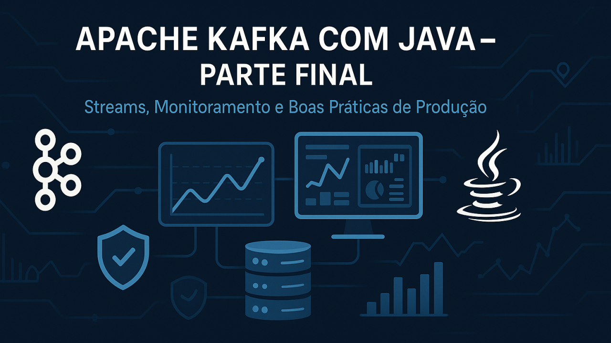

Kafka Avançado e Produção
Parte Final: Kafka Avançado e Produção

Desenvolvedor Java Sênior | Especialista em Back-end | Jakarta, Spring Boot, REST APIs, Docker | Engenheiro Químico
7 de julho de 2025
Visão Geral
Esta parte é dedicada a tópicos avançados, integração com o ecossistema Kafka, monitoramento, segurança e práticas recomendadas para ambientes de produção.
Artefatos Práticos
Os principais artefatos para colocar em prática os tópicos avançados desta parte estão organizados na pasta artefatos-final/ do repositório:
- docker-compose-multibroker.yml: Exemplo de configuração de cluster Kafka com múltiplos brokers
- monitoramento/: Scripts e exemplos para Prometheus e Grafana
- seguranca/: Arquivos de configuração de autenticação/autorização (SASL/SSL, ACLs)
- schema-registry/: Exemplo de schema Avro
- kafka-connect/: Exemplo de configuração de conector JDBC
- backup-e-automacao/: Script de backup de tópicos
- boas-praticas/: Checklist de produção
Consulte cada subpasta para exemplos práticos e adapte conforme o seu ambiente.
Processamento Avançado
Kafka Streams
- Processamento de dados em tempo real diretamente no Kafka
- Exemplo de uso para agregações, joins e transformações
Kafka Connect
- Integração com bancos de dados, sistemas legados e APIs
- Uso de conectores prontos (JDBC, Elasticsearch, etc.)
Schema Registry
- Gerenciamento de esquemas de dados (Avro, Protobuf, JSON Schema)
- Evolução de schemas e compatibilidade
Monitoramento e Observabilidade
- Monitoramento de brokers, tópicos e consumidores
- Uso de JMX, Prometheus e Grafana para métricas
- Monitoramento de lag de consumidores
- Alertas e dashboards
Segurança
- Autenticação (SASL, SSL/TLS)
- Autorização (ACLs)
- Boas práticas para ambientes corporativos
Deploy e Operação
- Deploy em cluster (alta disponibilidade e replicação)
- Kafka em nuvem (Confluent Cloud, AWS MSK, Azure Event Hubs)
- Backup, restauração e upgrades
- Gerenciamento de recursos e tuning de performance
Boas Práticas para Produção
- Configuração de retenção de dados
- Estratégias de particionamento
- Políticas de replicação
- Testes de resiliência e failover
- Documentação e automação de operações
Exercícios Sugeridos
Para fixar o aprendizado e experimentar cenários reais de produção, pratique os seguintes desafios:
- Configurar um cluster Kafka com múltiplos brokers Monte um ambiente distribuído usando o docker-compose-multibroker.yml e explore como funcionam replicação, failover e balanceamento de partições.
- Implementar monitoramento com Prometheus e Grafana Utilize os exemplos de configuração para coletar métricas do Kafka e visualize-as em dashboards prontos. Experimente criar alertas para lag de consumidores e uso de disco.
- Configurar autenticação e autorização Ative SSL/SASL e defina ACLs para controlar o acesso aos tópicos. Teste diferentes cenários de permissão e bloqueio.
- Realizar testes de failover e recuperação Simule a queda de um broker e observe como o cluster se comporta. Teste a restauração de dados a partir de backups.
- Integrar Kafka com outros sistemas usando Kafka Connect Configure conectores para importar/exportar dados de bancos relacionais, arquivos ou APIs. Experimente transformar dados em trânsito.
Exercícios Práticos
Para praticar e aprofundar os tópicos avançados, consulte também o arquivo auxiliar:
- parte-final-avancado/exercicios-parte-final.md — Desafios práticos de produção, automação, monitoramento e segurança, com espaço para anotações e roteiro de estudos.
Parabéns! Você concluiu o guia completo.
Agora você está pronto para atuar com Apache Kafka em ambientes profissionais, dominando desde a arquitetura básica até práticas avançadas de produção, automação, segurança e monitoramento.
Saiba que:
Todo o conteúdo, exemplos práticos e arquivos de configuração desta parte estão disponíveis no repositório oficial do projeto no GitHub:
🔗 github.com/chmulato/kafka-java-mastery
Acesse, explore e contribua!